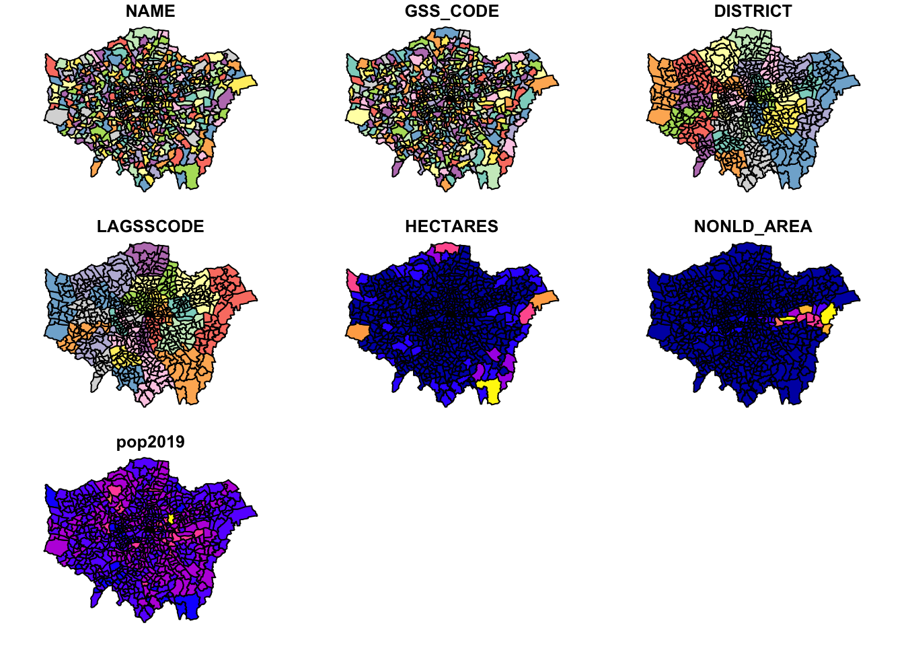
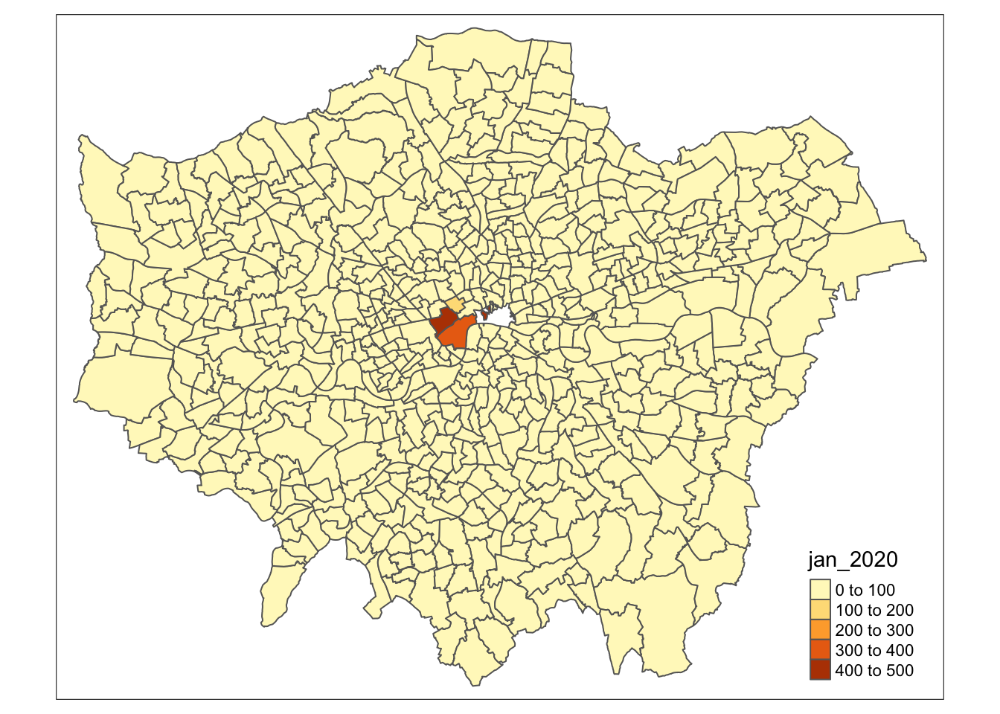
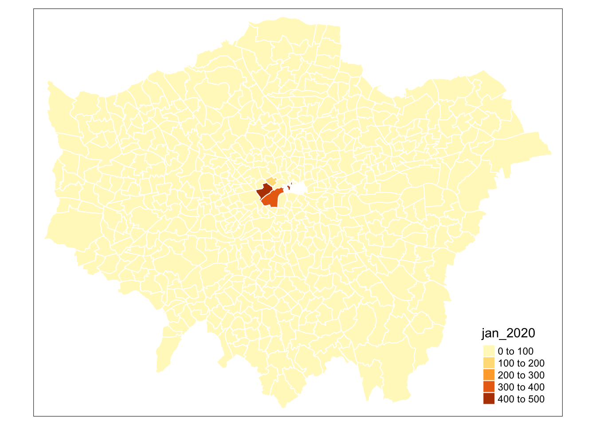
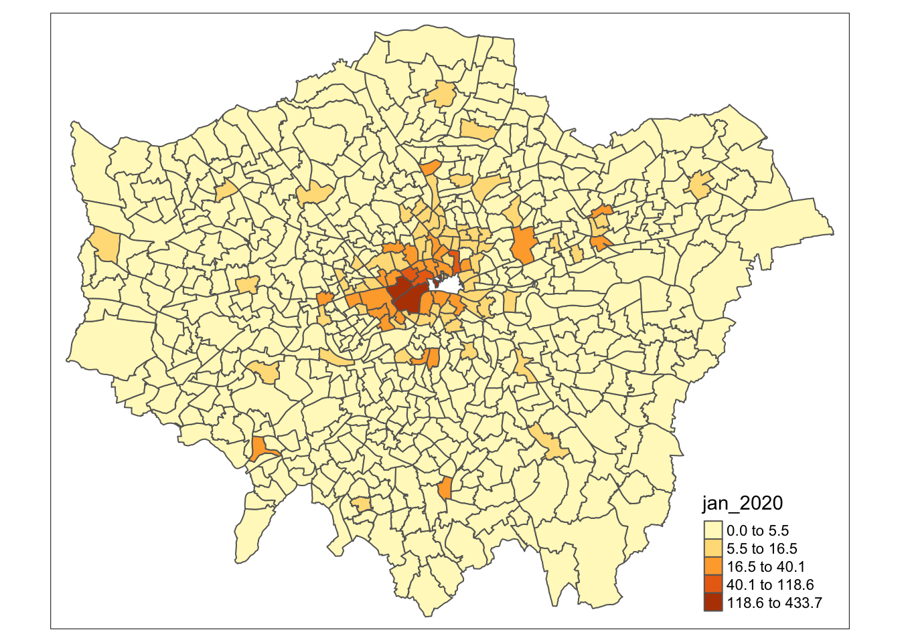
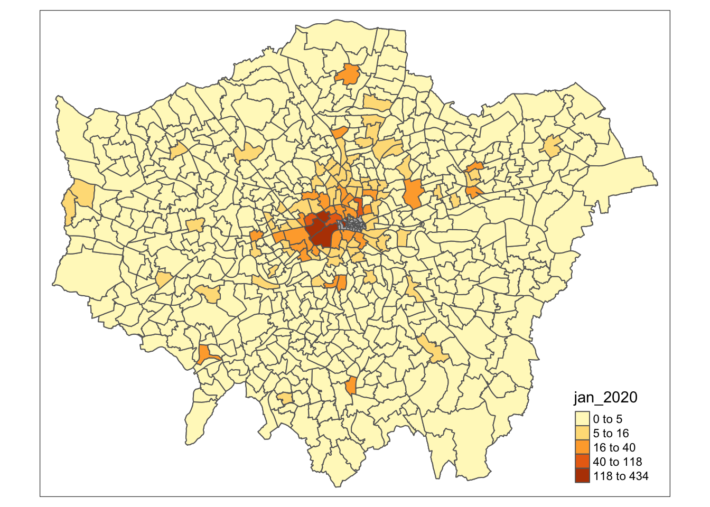
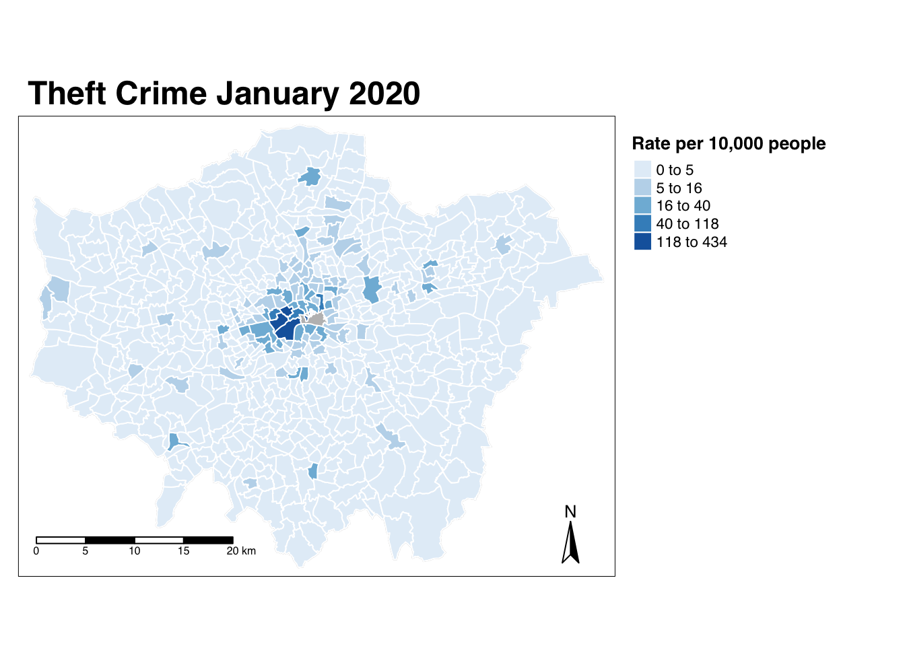

5 Programming for Spatial Analysis
This week we are going to look at how to use R and RStudio as a piece of GIS software. Like last week, we will be completing an analysis on our London theft crime dataset. However, rather than solely looking at changing crime rates over time, we will add a spatial component to our analysis: how has crime changed across our wards over the years.
5.1 Reading list
Essential readings
- Longley, P. et al. 2015. Geographic Information Science & systems, Chapter 13: Spatial Analysis. [Link]
- Lovelace, R., Nowosad, J. and Muenchow, J. 2021. Geocomputation with R, Chapter 2: Geographic Data in R. [Link]
- Lovelace, R., Nowosad, J. and Muenchow, J. 2021. Geocomputation with R, Chapter 3: Attribute data operations. [Link]
- Lovelace, R., Nowosad, J. and Muenchow, J. 2021. Geocomputation with R, Chapter 8: Making maps with R. [Link]
Suggested readings
- Poorthuis, A. and Zook, M. 2020. Being smarter about space: Drawing lessons from spatial science. Annals of the American Association of Geographers 110(2): 349-359. [Link]
- De Smith, M, Goodchild, M. and Longley, P. 2018. Geospatial analsyis. A Comprehensive guide to principles techniques and software tools. Chapter 9: Big Data and geospatial analysis. [Link]
- Radil, S. 2016. Spatial analysis of crime. The Handbook of Measurement Issues in Criminology and Criminal Justice 536-554. [Link]
5.2 Crime in London III
To analyse crime by ward over time, we will go through several steps of data preparation (‘data wrangling’) before joining our data to ward polygons. We will start by taking our all_theft_df dataframe and wrangle it to produce a dataframe with a for each ward the number of crimes for each month of data. we then join this dataframe to our ward_population_2019 shapefile (which should still be sitting in your output folder) and then produce a crime rate for each month, for each ward. Lastly, we will create a map of the crime rate in London for January 2020 using the tmap library.
5.2.1 Data preparation
Before we get started, we first need to head back to our script from last week, run our script - and then write our all_theft_df to a csv file. If you had saved your environment from last week, keeping your variables in memory, theoretically you would not need to export the data frame as you should have access to this variable within your new script but it would be good practice to write out the data and then load it back in.
- Open up your GEOG0030 RStudio project.
- Next open your script from last week:
wk4-csv-processing.r. - Run your full script up to and including the code that filters our large
all_crime_dfto only theall_theft_df. - Scroll to the bottom of the script and enter the following code and execute:
# write out the theft_crime_df to a csv within our raw crime data folder
write.csv(all_theft_df, "data/raw/crime/crime_theft_2020_london.csv", row.names = FALSE)Note
If using a Windows machine, you will need to substitute your forward-slashes (/) with two backslashes (\\) whenever you are dealing with file paths!
You should now see a new csv within your raw crime data folder (data/raw/crime). You can now save your wk4-csv-processing.r script and close the script.
5.2.2 Spatial analysis set up
Open a new script within your GEOG0030 project and save this script as wk5-crime-spatial-processing.r. At the top of your script, add the following metadata (substitute accordingly):
# Analysing crime in 2020 by month and ward
# Date: January 2023
# Author: Justin Now let us add all of the libraries we will be using today to the top of our script:
# libraries
library(tidyverse)
library(sf)
library(tmap)# change tmap mode to plot
tmap_mode("plot")You are already familiar with the tidyverse library, but now we adding sf to read and load our spatial data as well as tmap to visualise our spatial data. We are going to load both of the datasets we need today straight away: the crime_theft_2020_london.csv we have just exported and the ward_population_2019.shp we created in Week 3.
First, let’s load our crime_theft_2020_london.csv into a dataframe called all_theft_df.
# read in our crime_theft_2020_london csv from our raw crime data folder
all_theft_df <- read_csv("data/raw/crime/crime_theft_2020_london.csv")We can double-check what our csv looks like by either viewing our data or simply calling the head() function on our dataframe:
# check the first five rows of our all_theft dataframe
head(all_theft_df)## # A tibble: 6 × 12
## crime_id month repor…¹ falls…² longi…³ latit…⁴ locat…⁵ lsoa_…⁶ lsoa_…⁷ crime…⁸
## <chr> <chr> <chr> <chr> <dbl> <dbl> <chr> <chr> <chr> <chr>
## 1 37c663d… 2020… City o… City o… -0.106 51.5 On or … E01000… Camden… Theft …
## 2 dcfa16f… 2020… City o… City o… -0.0941 51.5 On or … E01000… City o… Theft …
## 3 be9310e… 2020… City o… City o… -0.0945 51.5 On or … E01000… City o… Theft …
## 4 0cbb0c5… 2020… City o… City o… -0.0945 51.5 On or … E01000… City o… Theft …
## 5 aaafbcf… 2020… City o… City o… -0.0750 51.5 On or … E01000… City o… Theft …
## 6 8249cc1… 2020… City o… City o… -0.0750 51.5 On or … E01000… City o… Theft …
## # … with 2 more variables: last_outcome_category <chr>, context <lgl>, and
## # abbreviated variable names ¹reported_by, ²falls_within, ³longitude,
## # ⁴latitude, ⁵location, ⁶lsoa_code, ⁷lsoa_name, ⁸crime_typeYou should see these rows display in your console. Great, the dataset looks as we remember, with the different fields, including, importantly for this week, the LSOA code which we will use to process and join our data together.
Next, let’s add our ward_population_2019.shp. We will store this as a variable called ward_population and use the sf library to load the data:
# read in our ward_population_2019 shp from our output data folder
ward_population <- st_read("data/output/ward_population_2019.shp", stringsAsFactors = FALSE)## Reading layer `ward_population_2019' from data source
## `/Users/justinvandijk/Dropbox/UCL/Web/jtvandijk.github.io/GEOG0030/data/output/ward_population_2019.shp'
## using driver `ESRI Shapefile'
## Simple feature collection with 657 features and 7 fields
## Geometry type: POLYGON
## Dimension: XY
## Bounding box: xmin: 503568.2 ymin: 155850.8 xmax: 561957.5 ymax: 200933.9
## Projected CRS: OSGB36 / British National GridYou should now see the ward_population variable appear in your environment window.
5.2.3 Interacting with spatial data
As this is the first time we have loaded spatial data into R, let’s go for a little exploration of how we can interact with our spatial data frame. The first thing we want to do when we load spatial data is, of course, map it to if everything is in order. To do this, we can use a really simple command from R’s base library: plot(). As we do not necessarily want to plot this data everytime we run this script in the future, we can type this command into the console:
# plot our ward_population data
plot(ward_population)
You should see your ward_population plot appear in your Plots window - as you will see, your ward dataset is plotted ‘thematically’ by each of the fields within the dataset, including our pop2019 field we created last week.
Tip
This plot() function is not to be used to make maps but can be used as a quick way of viewing our spatial data.
We can also find out more information about our ward_population data. Let’s next check out our class of our data. Again, in the console type:
# find out the class of our ward_population data
class(ward_population)## [1] "sf" "data.frame"We should see our data is an sf dataframe, which is great as it means we can utilise our tidyverse libraries with our ward_population. We can also use the attributes() function we looked at last week to find out a little more about the spatial part of our data frame:
# find out the attributes of our ward_population data
attributes(ward_population)## $names
## [1] "NAME" "GSS_CODE" "DISTRICT" "LAGSSCODE" "HECTARES"
## [6] "NONLD_AREA" "pop2019" "geometry"
##
## $row.names
## [1] 1 2 3 4 5 6 7 8 9 10 11 12 13 14 15 16 17 18
## [19] 19 20 21 22 23 24 25 26 27 28 29 30 31 32 33 34 35 36
## [37] 37 38 39 40 41 42 43 44 45 46 47 48 49 50 51 52 53 54
## [55] 55 56 57 58 59 60 61 62 63 64 65 66 67 68 69 70 71 72
## [73] 73 74 75 76 77 78 79 80 81 82 83 84 85 86 87 88 89 90
## [91] 91 92 93 94 95 96 97 98 99 100 101 102 103 104 105 106 107 108
## [109] 109 110 111 112 113 114 115 116 117 118 119 120 121 122 123 124 125 126
## [127] 127 128 129 130 131 132 133 134 135 136 137 138 139 140 141 142 143 144
## [145] 145 146 147 148 149 150 151 152 153 154 155 156 157 158 159 160 161 162
## [163] 163 164 165 166 167 168 169 170 171 172 173 174 175 176 177 178 179 180
## [181] 181 182 183 184 185 186 187 188 189 190 191 192 193 194 195 196 197 198
## [199] 199 200 201 202 203 204 205 206 207 208 209 210 211 212 213 214 215 216
## [217] 217 218 219 220 221 222 223 224 225 226 227 228 229 230 231 232 233 234
## [235] 235 236 237 238 239 240 241 242 243 244 245 246 247 248 249 250 251 252
## [253] 253 254 255 256 257 258 259 260 261 262 263 264 265 266 267 268 269 270
## [271] 271 272 273 274 275 276 277 278 279 280 281 282 283 284 285 286 287 288
## [289] 289 290 291 292 293 294 295 296 297 298 299 300 301 302 303 304 305 306
## [307] 307 308 309 310 311 312 313 314 315 316 317 318 319 320 321 322 323 324
## [325] 325 326 327 328 329 330 331 332 333 334 335 336 337 338 339 340 341 342
## [343] 343 344 345 346 347 348 349 350 351 352 353 354 355 356 357 358 359 360
## [361] 361 362 363 364 365 366 367 368 369 370 371 372 373 374 375 376 377 378
## [379] 379 380 381 382 383 384 385 386 387 388 389 390 391 392 393 394 395 396
## [397] 397 398 399 400 401 402 403 404 405 406 407 408 409 410 411 412 413 414
## [415] 415 416 417 418 419 420 421 422 423 424 425 426 427 428 429 430 431 432
## [433] 433 434 435 436 437 438 439 440 441 442 443 444 445 446 447 448 449 450
## [451] 451 452 453 454 455 456 457 458 459 460 461 462 463 464 465 466 467 468
## [469] 469 470 471 472 473 474 475 476 477 478 479 480 481 482 483 484 485 486
## [487] 487 488 489 490 491 492 493 494 495 496 497 498 499 500 501 502 503 504
## [505] 505 506 507 508 509 510 511 512 513 514 515 516 517 518 519 520 521 522
## [523] 523 524 525 526 527 528 529 530 531 532 533 534 535 536 537 538 539 540
## [541] 541 542 543 544 545 546 547 548 549 550 551 552 553 554 555 556 557 558
## [559] 559 560 561 562 563 564 565 566 567 568 569 570 571 572 573 574 575 576
## [577] 577 578 579 580 581 582 583 584 585 586 587 588 589 590 591 592 593 594
## [595] 595 596 597 598 599 600 601 602 603 604 605 606 607 608 609 610 611 612
## [613] 613 614 615 616 617 618 619 620 621 622 623 624 625 626 627 628 629 630
## [631] 631 632 633 634 635 636 637 638 639 640 641 642 643 644 645 646 647 648
## [649] 649 650 651 652 653 654 655 656 657
##
## $class
## [1] "sf" "data.frame"
##
## $sf_column
## [1] "geometry"
##
## $agr
## NAME GSS_CODE DISTRICT LAGSSCODE HECTARES NONLD_AREA pop2019
## <NA> <NA> <NA> <NA> <NA> <NA> <NA>
## Levels: constant aggregate identityWe can see how many rows we have, the names of our rows and a few more pieces of information about our ward_population data, for example, we can see that the specific $sf_column i.e. our spatial information) in our dataset is called geometry.
We can investigate this column a little more by selecting this column within our console to return. In the console type:
# get info about the geometry of our ward_population data
ward_population$geometry## Geometry set for 657 features
## Geometry type: POLYGON
## Dimension: XY
## Bounding box: xmin: 503568.2 ymin: 155850.8 xmax: 561957.5 ymax: 200933.9
## Projected CRS: OSGB36 / British National Grid
## First 5 geometries:You should see new information about our geometry column display in your console.
From this selection we can find out the dataset’s:
- geometry type
- dimension
- bbox (bounding box)
- CRS (coordinate reference system)
And also the first five geometries of our dataset.
This is really useful as one of the first things we want to know about our spatial data is what coordinate system it is projected with. As we should know, our ward_population data was created and exported within British National Grid, therefore seeing the EPSG code of British National Grid - 27700 - as our CRS confirms to us that R has read in our dataset correctly.
We could also actually find out this information using the st_crs() function from the sf library.
# find out the CRS of our ward_population data
st_crs(ward_population)## Coordinate Reference System:
## User input: OSGB36 / British National Grid
## wkt:
## PROJCRS["OSGB36 / British National Grid",
## BASEGEOGCRS["OSGB36",
## DATUM["Ordnance Survey of Great Britain 1936",
## ELLIPSOID["Airy 1830",6377563.396,299.3249646,
## LENGTHUNIT["metre",1]]],
## PRIMEM["Greenwich",0,
## ANGLEUNIT["degree",0.0174532925199433]],
## ID["EPSG",4277]],
## CONVERSION["British National Grid",
## METHOD["Transverse Mercator",
## ID["EPSG",9807]],
## PARAMETER["Latitude of natural origin",49,
## ANGLEUNIT["degree",0.0174532925199433],
## ID["EPSG",8801]],
## PARAMETER["Longitude of natural origin",-2,
## ANGLEUNIT["degree",0.0174532925199433],
## ID["EPSG",8802]],
## PARAMETER["Scale factor at natural origin",0.9996012717,
## SCALEUNIT["unity",1],
## ID["EPSG",8805]],
## PARAMETER["False easting",400000,
## LENGTHUNIT["metre",1],
## ID["EPSG",8806]],
## PARAMETER["False northing",-100000,
## LENGTHUNIT["metre",1],
## ID["EPSG",8807]]],
## CS[Cartesian,2],
## AXIS["(E)",east,
## ORDER[1],
## LENGTHUNIT["metre",1]],
## AXIS["(N)",north,
## ORDER[2],
## LENGTHUNIT["metre",1]],
## USAGE[
## SCOPE["Engineering survey, topographic mapping."],
## AREA["United Kingdom (UK) - offshore to boundary of UKCS within 49°45'N to 61°N and 9°W to 2°E; onshore Great Britain (England, Wales and Scotland). Isle of Man onshore."],
## BBOX[49.75,-9,61.01,2.01]],
## ID["EPSG",27700]]You notice that we actually get a lot more information about our CRS beyond simply the code using this function. This function is really important to us as users of spatial data as it allows us to retrieve and set the CRS of our spatial data when the data does not come with a .proj file but we do know what projection system should be used.
The final thing we might want to do before we get started with our data analysis is to simply look at the data table part of our dataset, i.e. what we called the Attribute Table in QGIS, but here it is simply the table part of our data frame. To do so, you can either use the View() function in the console or click on the ward_population variable within our environment.
5.2.4 Getting our crime data in shape
Now we have our data loaded, our next step is to process our data to create what we need as our final output for analysis: a spatial dataframe that contains a theft crime rate for each ward for each month in 2020. However, if we look at our all_theft_df, we do not have a field that contains the wards our crimes have occurred in. We only have two types of spatial or spatially-relevant data in our all_theft_df:
- The approximate WGS84 latitude and longitude.
- The Lower Super Output Area (LSOA) in which the crime it occurred.
From Week 3’s practical, we know we can map our points using the coordinates and then provide a count by using a point-in-polygon (PIP) operation. However to do this for each month, we would need to filter our dataset for each month and repeat the PIP operation - when we know a little more advanced code, this might end up being quite simple, but for now we will try to see if we can solve it differently.
5.2.4.1 Attribute join
To get the number of crimes that occurred in each ward, all we need to do is figure our which Ward our LSOAs fall within and then we can add this as an additional attribute or rather column to our all_theft_df.
From a GIScience perspective, there are many ways to do this but the most straight forward is to use something called a look-up table. Look-up tables are an extremely common tool in database management and programming, providing a very simple approach to storing additional information about a feature (such as a row within a dataframe) in a separate table that can quite literally be “looked up” when needed for a specific application.
In our case, we will actually join our look-up table to our current all_theft_df to get this information “hard-coded” to our dataframe for ease of use. To be able to do this, we therefore need to find a look-up table that contains a list of LSOAs in London and the wards in which they are contained. Lucky for us the Office for National Statistics provides this for us in their Open Geography Portal. They have a table that contains exactly what we’re looking for: Lower Layer Super Output Area (2011) to Ward (2018) Lookup in England and Wales v3. As the description on the website tells us: “This file is a best-fit lookup between 2011 lower layer super output areas, electoral wards/divisions and local authority districts in England and Wales as at 31 December 2018.”
- Download the ONS look-up table: [Link]
- Move this file in your data -> raw -> boundaries folder and rename to
data/raw/boundaries/lsoa_ward_lookup.csv. - Load the dataset using the
read_csv()function. Do not worry if you have a few “parsing” failures, the table should still work fine.
# read in our lsoa_ward_lookup csv from our raw boundaries data folder
lsoa_ward_lookup <- read_csv("data/raw/boundaries/lsoa_ward_lookup.csv")Now we have our lookup table, all we are going to do is extract the relevant ward name and code for each of the LSOAs in our all_theft_df. To do so, we’re going to use one of the join functions from the dplyr library.
Note
We have already learnt how to complete Attribute Joins in QGIS via the Joins tab in the Properties window so it should come of no surprise that we can do exactly the same process within R. To conduct a join between two dataframes (spatial or non-spatial, it does not matter), we use the same principles of selecting a unique but matching field within our dataframes to join them together.
Within R, you have two options to complete a data frame join:
- The first is to use the
baseR library and itsmerge()function:- By default the data frames are merged on the columns with names they both have, but you can also provide the columns to match separate by using the parameters:
by.xandby.y. - Your code would look something like:
merge(x, y, by.x = "xColName", by.y = "yColName"), withxandyeach representing a dataframe. - The rows in the two data frames that match on the specified columns are extracted, and joined together.
- If there is more than one match, all possible matches contribute one row each, but you can also tell merge whether you want all rows, including ones without a match, or just rows that match, with the arguments all.x and all.
- By default the data frames are merged on the columns with names they both have, but you can also provide the columns to match separate by using the parameters:
- The second option is to use the
dplyrlibrary:dplyruses SQL database syntax for its join functions.- There are four types of joins possible with the
dplyrlibrary.inner_join(): includes all rows that exist both withinxandy.left_join(): includes all rows inx.right_join(): includes all rows iny.full_join(): includes all rows inxandy.
- Figuring out which one you need will be on a case by case basis.
- Again, if the join columns have the same name, all you need is
left_join(x, y). - If they do not have the same name, you need a
byargument, such asleft_join(x, y, by = c("xName" = "yName")). Left of the equals is the column for the first data frame, right of the equals is the name of the column for the second data frame.
As we have seen from the list of fields above, we know that we have at least two fields that should match across the datasets: our lsoa codes and lsoa names. We of course need to identify the precise fields that contain these values in each of our data frames, i.e. LSOA11CD and LSOA11NM in our lsoa_ward_lookup dataframe and lsoa_code and lsoa_name in our all_theft_df dataframe, but once we know what fields we can use, we can go ahead and join our two data frames together.
We are going to need to make multiple joins between our tables as we have multiple entries of crime for the same LSOA. In addition, we are going to need to use a function that allows us to keep all rows in our all_theft_df dataframe, but we do not need to keep all rows in our lsoa_ward_lookup if those wards are not within our dataset.
Let’s have a look in detail at how the four different types of joins from dplyr work:

Figure 5.1: Different types of joins.
It looks like we’re going to need to use our left_join() function as we want to join matching rows from our lsoa_ward_lookup dataframe to our all_theft_df dataframe but make sure to keep all rows in the latter. Create a join between our two dataframes and store as a new variable:
# join lsoa_ward_lookup rows to the all_theft_df on our two lsoa code fields
all_theft_ward_df <- left_join(all_theft_df, lsoa_ward_lookup, by = c(lsoa_code = "LSOA11CD"))Let’s go ahead and check our join to make sure that our LSOA codes and names match across our new dataframe.
# check our join via the first five rows
head(all_theft_ward_df)## # A tibble: 6 × 19
## crime_id month repor…¹ falls…² longi…³ latit…⁴ locat…⁵ lsoa_…⁶ lsoa_…⁷ crime…⁸
## <chr> <chr> <chr> <chr> <dbl> <dbl> <chr> <chr> <chr> <chr>
## 1 37c663d… 2020… City o… City o… -0.106 51.5 On or … E01000… Camden… Theft …
## 2 dcfa16f… 2020… City o… City o… -0.0941 51.5 On or … E01000… City o… Theft …
## 3 be9310e… 2020… City o… City o… -0.0945 51.5 On or … E01000… City o… Theft …
## 4 0cbb0c5… 2020… City o… City o… -0.0945 51.5 On or … E01000… City o… Theft …
## 5 aaafbcf… 2020… City o… City o… -0.0750 51.5 On or … E01000… City o… Theft …
## 6 8249cc1… 2020… City o… City o… -0.0750 51.5 On or … E01000… City o… Theft …
## # … with 9 more variables: last_outcome_category <chr>, context <lgl>,
## # LSOA11NM <chr>, WD18CD <chr>, WD18NM <chr>, WD18NMW <chr>, LAD18CD <chr>,
## # LAD18NM <chr>, FID <dbl>, and abbreviated variable names ¹reported_by,
## # ²falls_within, ³longitude, ⁴latitude, ⁵location, ⁶lsoa_code, ⁷lsoa_name,
## # ⁸crime_typeYou should now see that you have with 19 variables: 12 from all_theft_df, plus 7 from lsoa_ward_lookup. Now we have our joined dataset, we can move forward with some more data wrangling. Before we do this, it would be good if we could trim down our dataframe to only the relevant data that we need moving forward.
To be able to ‘trim’ our data frame, we have two choices in terms of the code we might want to run. First, we could look to drop certain columns from our data frame. Alternatively, we could create a subset of the columns we want to keep from our data frame and store this as a new variable or simply overwrite the currently stored variable. To do either of these types of data transformation, we need to know more about how we can interact with a data frame in terms of indexing, selecting and slicing.
5.2.5 Data wrangling
Everything we will be doing today as we progress with our data frame cleaning and processing relies on us understanding how to interact with and transform our data frame. This interaction itself relies on knowing about how indexing works in R as well as how to select and slice your data frame to extract the relevant cells, rows or columns and then manipulate them. Whilst there are traditional programming approaches to this using the base R library, dplyr is making this type of data wrangling much easier. The following video provides an excellent explanation from both a base R perspective as well as using the dplyr library. It also includes a good explanation about what our pipe function , %>% or |> , does.
As you can see from the video, there are two common approaches to selection and slicing in R, which rely on indexing and/or field names in different ways.
5.2.5.1 Selection with base R
The most basic approach to selecting and slicing within programming relies on the principle of using indexes within our data structures. Indexes actually apply to any type of data structure, from single atomic vectors to complicated data frames as we use here. Indexing is the numbering associated with each element of a data structure. For example, if we create a simple vector that stores several strings:
# store a simple vector of strings
simple_vector <- c("Aa", "Bb", "Cc", "Dd", "Ee", "Ff", "Gg")R will assign each element (i.e. string) within this simple vector with a number: Aa = 1, Bb = 2, Cc = 3 and so on. Now we can go ahead and select each element by using the base selection syntax which is using square brackets after your element’s variable name, as so:
# select the first element of our variable
simple_vector[1]## [1] "Aa"Which should return the first element, our first string containing Aa. You could change the number in the square brackets to any number up to 7 and you would return each specific element in our vector. However, say you do not want the first element of our vector but the second to fifth elements. To achieve this, we conduct what is known in programming as a slicing operation, where, using the [] syntax, we add a colon : to tell R where to start and where to end in creating a selection, known as a slice:
# select the second to fifth element of our vector, creating a 'slice' of our
# vector
simple_vector[2:5]## [1] "Bb" "Cc" "Dd" "Ee"You should now see our 2nd to 5th elements returned. Now what is super cool about selection and slicing is that we can add in a simple - (minus) sign to essentially reverse our selection. So for example, we want to return everything but the 3rd element:
# select everything but the third element of our vector
simple_vector[-3]## [1] "Aa" "Bb" "Dd" "Ee" "Ff" "Gg"And with a slice, we can use the minus to slice out parts of our vector, for example, remove the 2nd to the 5th elements (note the use of a minus sign for both):
# select the second to fifth element of our vector, creating a 'slice' of our
# vector
simple_vector[-2:-5]## [1] "Aa" "Ff" "Gg"Note
This use of square brackets for selection syntax is common across many programming languages, including Python, but there are often some differences you will need to be aware of if you pursue other languages. For example:
- Python always starts its index from
0! Whereas we can see here with R, our index starts at1. - R is unable to index the characters within strings. This is something you can do in Python, but in R, we will need to use a function such as
substring().
We can also apply these selection techniques to data frames, but we will have a little more functionality as our data frames are made from both rows and columns. This means when it comes to selections, we can utilise an amended selection syntax that follows a specific format to select individual rows, columns, slices of each, or just a single cell: [rows, columns]
There are many ways we can use this syntax, which we will show below using our lsoa_ward_lookup data frame. First, before looking through and executing these examples familiarise yourself with the lsoa_ward_lookup data frame:
# view lsoa_ward_lookup dataframe
View(lsoa_ward_lookup)To select a single column from your data frame, you can use one of two approaches. First we can follow the syntax above carefully and simply set our column parameter in our syntax above to the number 2:
# select the 2nd column from the data frame
lsoa_ward_lookup[, 2]You should see your second column display in your console. Second, we can actually select our column by only typing in the number (no need for the comma). By default, when there is only one argument present in the selection brackets, R will select the column from the data frame, not the row:
# select the 2nd column from the data frame
lsoa_ward_lookup[2]To select a specific row, we need to add in a comma after our number:
# select the 2nd row from the data frame
lsoa_ward_lookup[2, ]You should see your second row appear. Now, to select a specific cell in our data frame, we simply provide both arguments in our selection parameters:
# select the value at the 2nd row and 2nd column in the data frame
lsoa_ward_lookup[2, 2]What is also helpful in R is that we can select our columns by their field names by passing these field names to our selection brackets as a string. For a single column:
# select the LSOA11NM column (2nd column) by name
lsoa_ward_lookup["LSOA11NM"]Or for more than one columns, we can supply a combined vector:
# select the LSOA11CD (1st column) and LSOA11NM column (2nd column) by name
lsoa_ward_lookup[c("LSOA11CD", "LSOA11NM")]To retrieve our 2nd - 4th columns in our data frame, we can use:
# select the 2nd to 4th columns from our data frame
lsoa_ward_lookup[2:4]
# select the 2nd to 4th columns from our data frame
lsoa_ward_lookup[, 2:4]We can also apply the negative:
# select everything but the 2nd to 4th columns from our data frame
lsoa_ward_lookup[-2:-4]If you do not want a slide, we can also provide a combined list of the columns we want to extract:
# select the 2nd, 3rd, 4th and 7th columns from our data frame
lsoa_ward_lookup[c(2, 3, 4, 7)]We can apply this slicing approach to our rows:
# select the 2nd to 4th rows from our data frame
lsoa_ward_lookup[2:4, ]As well as a negative selection:
# select everything but the 2nd to 4th rows from our data frame
lsoa_ward_lookup[-2:-4, ]5.2.5.2 Selection with dplyr
Instead of using the square brackets [] syntax, we now have functions that we can use to select or slice our data frames accordingly:
- For columns, we use the
select()function that enables us to select one or more columns using their column names. - For rows, we use the
slice()function that enables us to select one or more rows using their position (i.e. similar to the process above).
For both functions, we can also use the negative - approach we saw in the base R approach to “reverse a selection”, e.g.:
# select column 2
dplyr::select(lsoa_ward_lookup, 2)
# select everything but column 2
dplyr::select(lsoa_ward_lookup, -2)
# select LSOA11CD column, note no ''
dplyr::select(lsoa_ward_lookup, LSOA11CD)
# select everything but column 2, note no ''
dplyr::select(lsoa_ward_lookup, -LSOA11CD)
# select everything but column 2
dplyr::select(lsoa_ward_lookup, -LSOA11CD)In addition to these index-based functions, within dplyr, we also have filter() that enables us to easily filter rows within our data frame based on specific conditions (such as being a City of London ward). In addition, dplyr provides lots of functions that we can use directly with these selections to apply certain data wrangling processes to only specific parts of our data frame, such as mutate() or count().
Note
We will be using quite a few of these functions in the remaining data wrangling section below - plus throughout our module, so it is highly recommend to download the dplyr cheat sheet to keep track of what functions we are using and why!
As we have seen above, whilst there are two approaches to selection using either base R library or the dplyr library, we will continue to focus on using functions directly from the dplyr library to ensure efficiently and compatibility within our code. Within dplyr, as you also saw, whether we want to keep or drop columns, we always use the same function: select().
To use this function, we provide our function with a single or list of the columns we want to keep or if we want to drop them, we use the same approach, but add a - before our selection. Let’s see how we can extract just the relevant columns we will need for our future analysis. Note that we will overwrite our all_theft_ward_df variable.
In your script, add the following code to extract only the relevant columns we need for our future analysis:
# reduce our data frame using the select function
all_theft_ward_df <- dplyr::select(all_theft_ward_df, crime_id, month, longitude,
latitude, lsoa_name, lsoa_code, crime_type, WD18CD, WD18NM)You should now see that your all_theft_ward_df data frame should only contain nine variables. You can go and view this data frame or call the head() function on the data in the console if youlike to check out this new formatting.
5.2.6 Improving your workflow
Our current workflow looks good, we now have our data frame ready for use in wrangling but we could have done this a little more efficiently by using the pipe function %>% (or |>). A pipe is used to push the outcome of one function/process into another. When “piped”, we do not need to include the first “data frame” (or which data structure you are using) in the next function. The pipe “automates” this and pipes the results of the previous function directly into this function.
It might sound a little confusing at first, but once you start using it, it really can make your code quicker and easier to write and run and it stops us having to create lots of additional variables to store outputs along the way. It also enabled the code we used last week to load/read all the csvs at once.
In our workflow, we have so far:
- Joined our two data frames together.
- Removed the columns not needed for our future analysis.
Let’s see how we can combine this process into a single line of code:
Option 1: Original code, added pipe
# join, then select
all_theft_ward_df_speedy_1 <- left_join(all_theft_df, lsoa_ward_lookup, by = c(lsoa_code = "LSOA11CD")) %>%
dplyr::select(crime_id, month, longitude, latitude, lsoa_name, lsoa_code, crime_type,
WD18CD, WD18NM)You should see that we now end up with a data frame akin to our final output above - the same number of observations and variables, all from one line of course. We could also take another approach in writing code, by completing our selection prior to our join, which would mean having to write out fewer field names when piping this output into our join:
Option 2: New code, remove columns first
# select, then join
all_theft_ward_df_speedy_2 <- dplyr::select(lsoa_ward_lookup, LSOA11CD, WD18CD, WD18NM) %>%
right_join(all_theft_df, by = c(LSOA11CD = "lsoa_code"))What these two options do show is that there are multiple ways to achieve the same output, using similar code. Pipes help us improve the efficiency of our code. That being said: by adding the pipe, we are not able to check our join prior to the selection, so often it is better to add in improve the efficiency of your code once you are certain that your code has run correctly.
5.2.7 Aggregate crime by ward
To aggregate our crime by ward for each month in 2020, we need to use a combination of dplyr functions. First, we need to group our crime by each ward and then count - by month - the number of thefts occurring in each ward. To do so, we will use the group_by() function and the count() function.
The group_by() function creates a “grouped” copy of the table (in memory), then any dplyr function used on this grouped table will manipulate each group separately (i.e. our count by month manipulation) and then combine the results to a single output.
If we solely run the group_by() function, we won’t really see this effect on its own, instead we need to add the count() function, which counts the number of rows in each group defined by the variables provided within the function, in our case, month:
# group our crimes by ward, then count the number of thefts occurring in each
# month
theft_count_month_ward <- group_by(all_theft_ward_df, WD18CD) %>%
count(month)To understand our output, go ahead and View() the variable. You should see that we have ended up with a new table that lists each ward (by the WD18CD column) twelve times, to detail the number of thefts for each month - with the months represented as a single field. What we would really prefer is to have our crime count detailed as one field for each individual month, i.e. 2020-01 as a single field, then 2020-02, etc.
To change the shape of our data, we are going to need to use tidyr’s pivot functions. In the tidyr library, we have the choice of two pivot() functions: pivot_longer() or pivot_wider().
pivot_wider()“widens” data, increasing the number of columns and decreasing the number of rows.pivot_longer()“lengthens” data, increasing the number of rows and decreasing the number of columns.
Our data is already pretty long, so that seems to suggest that we should use pivot_wider(). We just need to first read through the documentation to figure out what parameters we need to use and how. Type ?pivot_wider into the console to access the documentation.
If we read through the documentation, we can figure our that our two parameters of interest are the names_from and values_from fields. We use the names_from parameter to set our month column as the column from which to derive output fields from, and the values_from field as our n field (count field) to set our values. As we do not have a field that uniquely identifies each of our rows, we can not use the id_cols parameter. We will therefore need to state the parameters in our code to make sure the function reads in our fields for the right parameter:
# pivot wider
theft_by_ward_month_df <- pivot_wider(theft_count_month_ward, names_from = month,
values_from = n)
# inspect
theft_by_ward_month_df## # A tibble: 645 × 13
## # Groups: WD18CD [645]
## WD18CD `2020-01` `2020-02` 2020-…¹ 2020-…² 2020-…³ 2020-…⁴ 2020-…⁵ 2020-…⁶
## <chr> <int> <int> <int> <int> <int> <int> <int> <int>
## 1 E05000026 30 28 25 6 12 13 11 10
## 2 E05000027 2 1 1 1 1 NA 3 1
## 3 E05000028 1 1 2 2 2 1 NA 1
## 4 E05000029 NA NA NA NA 2 NA 2 NA
## 5 E05000030 3 NA NA 1 NA 1 NA 3
## 6 E05000031 4 NA 4 2 1 NA 1 1
## 7 E05000032 NA NA 2 NA 2 3 2 1
## 8 E05000033 1 2 5 NA NA 1 NA 1
## 9 E05000034 1 NA 1 NA 1 2 1 NA
## 10 E05000035 3 4 NA NA 4 2 3 3
## # … with 635 more rows, 4 more variables: `2020-09` <int>, `2020-10` <int>,
## # `2020-11` <int>, `2020-12` <int>, and abbreviated variable names
## # ¹`2020-03`, ²`2020-04`, ³`2020-05`, ⁴`2020-06`, ⁵`2020-07`, ⁶`2020-08`One final thing we want to do is clean up the names of our fields to mean a little more to us. Let’s transform our numeric dates to text dates (and change our WD18CD in the process).
# rename columns
names(theft_by_ward_month_df) <- c("ward_code", "jan_2020", "feb_2020", "mar_2020",
"apr_2020", "may_2020", "jun_2020", "jul_2020", "aug_2020", "sept_2020", "oct_2020",
"nov_2020", "dec_2020")Write out the completed theft table to a new csv file for future reference:
# write out the theft_crime_df to a csv within our ouput data folder
write.csv(theft_by_ward_month_df, "data/output/theft_by_ward_per_month_2020.csv",
row.names = FALSE)5.2.8 Joining crime data to wards
We are now getting to the final stages of our data processing, we just need to join our completed theft table, theft_by_ward_month_df to our ward_population spatial data frame and then compute a theft crime rate. This will then allow us to map our theft rates per month by ward, exactly what we set to achieve within this practical. Luckily for us, the join approach we used earlier between our all_theft_df and our lsoa_ward_lookup is the exact same approach we need for this, even when dealing with spatial data.
Let’s go ahead and use the same left_join() function to join our two data frames together. In this case, we want to keep all rows in our ward_population spatial data frame, so this will be our x data frame, whilst the theft_by_ward_month_df will be our y.
# join theft by month to the correct wards in our ward_population data frame
all_theft_ward_sdf <- left_join(ward_population, theft_by_ward_month_df, by = c(GSS_CODE = "ward_code"))To double-check our join, we want to do one extra step of quality checks and check that each of our wards has at least one occurence of crime over the twelve month period. We do this by computing a new column that totals the number of thefts. By identifying any wards that have zero entries (i.e. NAs for each month), we can double-check with our original theft_by_ward_month_df to see if this is the correct “data” for that ward or if there has been an error in our join.
We can compute a new column by using the mutate() function from the dplyr library. We use the rowsums() function from the base library to compute the sum of rows and we use the across() function from the dplyr library to identify the columns for which we want to know the sum.
# total number of thefts for each ward, create new column
all_theft_ward_sdf <- all_theft_ward_sdf %>%
mutate(theft_total = rowSums(across(8:19), na.rm = T))You can now View() our updated all_theft_ward_sdf spatial data frame and sort out columns to see those with a theft_total of 0. What you should see is that we have approximately 20 City of London wards without data, whilst we do indeed have 10 additional wards without data. This seems not unlikely, so we can move forward with our dataset as it is, but what we will need to do is adjust the values present within these wards prior to our visualisation analysis: these should not have NA as their value but rather 0. In comparison our City of London wards should only contain NA. To make sure our data is as correct as possible prior to visualisation, we will remove our City of London wards that do not have any data (crime or population), and then convert the NA in our theft counts to 0.
# filter out City of London wards with a crime count of 0 or a population of 0
all_theft_ward_sdf <- filter(all_theft_ward_sdf, theft_total > 0 | DISTRICT != "City and County of the City of London")
# remove the ward of Vintry, which whilst it has a positive crime count, it
# does not contain a population
all_theft_ward_sdf <- filter(all_theft_ward_sdf, NAME != "Vintry")
# replace all NAs in our data frame with 0
all_theft_ward_sdf[is.na(all_theft_ward_sdf)] = 0The final step we need to take before we can map our theft data is, of course, compute a crime rate per month for our all_theft_ward_sdf data frame. We have our pop2019 column within our all_theft_ward_sdf data frame - we just need to figure out the code that allows us to apply our calculation that we’ve used in our previous practicals (i.e. using the Attribute/Field Calculator in QGIS: value/pop2019 * 10000) to each of our datasets.
Once again, after a bit of searching, we can find out that the mutate() function comes in handy and we can follow a specific approach in our code that allows us to apply the above equation to all of our columns within our data frame. Now this is certainly a big jump in terms of complexity of our code: we are going to store within our crime_rate variable our own function that calculates crime rate on a given value, currently called x. We will then apply this function on each relevant cell within our all_theft_ward_sdf using the mutate_at() function:
# create a new function called crime rate, which takes an argument, x, and the
# crime rate calculation
crime_rate = function(x, na.rm = FALSE) ((x/all_theft_ward_sdf$pop2019) * 10000)
# apply this calculation to all columns between 8 and 19 within the
# all_theft_ward_sdf and transform the values
theft_crime_rate_sdf <- mutate_at(all_theft_ward_sdf, vars(8:19), crime_rate)Have a look at your new theft_crime_rate_sdf spatial data frame. Does it look as you would expect? Now we have our final data frame, we can go ahead and make our maps.
5.2.9 Mapping crime data
For making our maps, we will be using one of two main visualisation libraries that can be used for spatial data: tmap. tmap is a library written around thematic map visualisation. The package offers a flexible, layer-based, and easy to use approach to create thematic maps, such as choropleths and bubble maps. What is really great about tmap is that it comes with one quick plotting method for a map called: qtm().
We can use this function to plot the theft crime rate for one of our months really quickly. Within your script, use the qtm function to create a map of theft crime rate in London in January 2020.
Note
Before continuing do confirm whether your theft_crime_rate_sdf is indeed still of class sf. In some instances it is possible that this changed when manipulating the attributes. You can simply check this by running class(theft_crime_rate_sdf). If your dataframe is not of class sf, you can force it into one by running theft_crime_rate_sdf <- st_as_sf(theft_crime_rate_sdf)).
# quick thematic map for January 2020
qtm(theft_crime_rate_sdf, fill = "jan_2020")
In this case, the fill argument is how we tell tmap to create a choropleth map based on the values in the column we provide it with. If we simply set it to NULL, we would only draw the borders of our polygons. Within our qtm function, we can pass quite a few different parameters that would enable us to change specific aesthetics of our map - if you go ahead and look up the documentation for the function, you will see a list of these parameters. We can, for example, set the lines of our ward polygons to white by adding the borders parameter:
# quick thematic map for January 2020, include white borders
qtm(theft_crime_rate_sdf, fill = "jan_2020", borders = "white")
The map does not really look great. We can continue to add and change parameters in our qtm() function to create a map we are satisfied with. However, the issue with the qtm() function is that it is quite limited in its functionality and mostly used to quickly inspect your data. Instead, when we want to develop more complex maps using the tmap library, we want to use their main plotting method which uses a function called tm_shape(), which we build on using the layered grammar of graphics approach.
Tip
When it comes to setting colours within a map or any graphic, we can either pass through a colour as a word, a HEX code or a pre-defined palette. You can find out more here, which is a great quick reference to just some of the possible colours and palettes you will be able to use in R.
The main approach to creating maps in tmap is to use the grammar of graphics to build up a map based on what is called the tm_shape() function. Essentially this function, when populated with a spatial data frame, takes the spatial information of our data (including the projection and geometry of our data) and creates a spatial “object”. This object contains some information about our original spatial data frame that we can override (such as the projection) within this function’s parameters, but ultimately, by using this function, you are instructing R that this is the object from which to “draw my shape”.
To actually draw the shape, we next need to add a layer to specify the type of shape we want R to draw from this information - in our case, our polygon data. We need to add a function therefore that tells R to “draw my spatial object as X” and within this “layer”, you can also specific additional information to tell R how to draw your layer. You can then add in additional layers, including other spatial objects (and their related shapes) that you want drawn on your map, plus a specify your layout options through a layout layer.
Let’s see how we can build up our first map in tmap.
# set our tm_shape equal to our spatial data frame
tm_shape(theft_crime_rate_sdf) +
# draw out spatial objects as polygons
tm_polygons()As you should now see, we have now mapped the spatial polygons of our theft_crime_rate_sdf spatial data frame. However, this is not the map we want: we want to have our polygons represented by a choropleth map where the colours reflect the theft crime rate in January, rather than the default grey polygons we see before us. To do so, we use the col= parameter that is within our tm_polygons() shape.
Tip
The col parameter within tm_polygons() is used to fill our polygons with a specific fill type, of either:
- a single color value (e.g.
red) - the name of a data variable that is contained in the spatial data file Either the data variable contains color values, or values (numeric or categorical) that will be depicted by a specific color palette.
MAP_COLORS. In this case polygons will be colored such that adjacent polygons do not get the same color.
Let’s go ahead and pass our jan_2020 column within the col= parameter and see what we get:
# set our tm_shape equal to our spatial data frame
tm_shape(theft_crime_rate_sdf) +
# draw out spatial objects as polygons, specifying a data column
tm_polygons(col = "jan_2020")
We are slowly getting there. But there are two things we can notice straight away that do not look right about our data. The first is that our classification breaks do not really reflect the variation in our dataset. This is because tmap has defaulted to its default break type: pretty breaks, whereas, as we know, using an approach such as natural breaks, aka jenks, may reveal better variation in our data.
Using the documentation for tm_polygons(), it looks like the following parameters are relevant to help us create the right classification for our map:
n: state the number of classification breaks you want.style: state the style of breaks you want, e.g.fixed,sd,equal,quantile.breaks: state the numeric breaks you want to use when using the fixed style approach.
Let’s say we want to change our choropleth map to have 5 classes, determined via the jenks method. We simply need to add the n and style parameters into our tm_polygons() layer:
# set our tm_shape equal to our spatial data frame
tm_shape(theft_crime_rate_sdf) +
# draw out spatial objects as polygons, specifying a data column, specifying jenks
tm_polygons(col = "jan_2020", n = 5, style = "jenks")
We now have a choropleth that reflects better the distribution of our data, but we can make them a little prettier by rounding the values. To do so, we can change the style of the map to fixed and then supply a new argument for breaks that contains the rounded classification breaks:
# set our tm_shape equal to our spatial data frame
tm_shape(theft_crime_rate_sdf) +
# draw out spatial objects as polygons, specifying a data column, specifying fixed breaks
tm_polygons(col = "jan_2020", n = 5, style = "fixed", breaks = c(0, 5, 16, 40, 118, 434))That looks a little better from the classification side of things. We still have one final data-related challenge to solve, before we start to style our map and that is showing the polygons for City of London wards, even though we have no data for them. The easiest way to do so is to simply add a spatial object to our map that symbolises our polygons as grey wards and then draw the crime data on top:
# set out tm_shape equal to our original ward data frame
tm_shape(ward_population) +
# draw out spatial objects as polygons, set to grey
tm_polygons("gray") +
# set our tm_shape equal to our spatial data frame
tm_shape(theft_crime_rate_sdf) +
# draw out spatial objects as polygons, specifying a data column, specifying fixed breaks
tm_polygons(col = "jan_2020", n = 5, style = "fixed", breaks = c(0, 5, 16, 40, 118, 434))
Note
The order of your layers matters. What happens if you were to switch the layers around, i.e. first add the crime rate layer and then the “grey” ward layer? Why?
5.2.10 Styling crime data
To style our map takes a further understanding and familiarity with our tmap library, but it is only something you will only really learn by having to make your own maps. As a result, we will not go into explaining exactly every aspect of map styling but instead provide you with some example code that you can use as well as experiment with to try to see how you can adjust aspects of the map to your preferences.
Fundamentally, the key functions to be aware of:
tm_layout(): contains parameters to style titles, fonts, the legend, etc.;tm_compass(): contains parameters to create and style a North arrow or compass;tm_scale_bar(): contains parameters to create and style a scale bar.
To be able to start styling our map, we need to interrogate each of these functions and their parameters to trial and error options to ultimately create a map we are happy with:
# set out tm_shape equal to our original ward data frame
tm_shape(ward_population) +
# draw out spatial objects as polygons, set to grey
tm_polygons("gray", border.col = "gray") +
# set our tm_shape equal to our spatial data frame
tm_shape(theft_crime_rate_sdf) +
# draw out spatial objects as polygons, specifying a data column,
# specifying fixed breaks, colour palette, and borders
tm_polygons(
col = "jan_2020", n = 5, style = "fixed",
breaks = c(0, 5, 16, 40, 118, 434),
palette = "Blues", border.col = "white",
title = "Rate per 10,000 people"
) +
# add title
tm_layout(
main.title = "Theft Crime January 2020",
main.title.fontface = 2,
fontfamily = "Helvetica",
legend.outside = TRUE,
legend.position = c("left", "top"),
legend.title.size = 1,
legend.title.fontface = 2
) +
# add North arrow
tm_compass(
type = "arrow",
position = c("right", "bottom")
) +
# add scale bar
tm_scale_bar(
breaks = c(0, 5, 10, 15, 20),
position = c("left", "bottom")
)
We will leave it at this, although there is a few more things we would want to do such as adding an additional legend property to state why the City of London wards are grey (No Data) as well as add our data source information.
5.2.11 Exporting our crime data
Once we are finished making our map, we can go ahead and export it to our maps folder. To do so, we need to save our map-making code to as a variable and then use the tmap_save() function to save the output of this code to a picture within our maps folder.
# add map object to variable
jan2020_map <-
# set out tm_shape equal to our original ward data frame
tm_shape(ward_population) +
# draw out spatial objects as polygons, set to grey
tm_polygons("gray", border.col = "gray") +
# set our tm_shape equal to our spatial data frame
tm_shape(theft_crime_rate_sdf) +
# draw out spatial objects as polygons, specifying a data column,
# specifying fixed breaks, colour palette, and borders
tm_polygons(
col = "jan_2020", n = 5, style = "fixed",
breaks = c(0, 5, 16, 40, 118, 434),
palette = "Blues", border.col = "white",
title = "Rate per 10,000 people"
) +
# add title
tm_layout(
main.title = "Theft Crime January 2020",
main.title.fontface = 2,
fontfamily = "Helvetica",
legend.outside = TRUE,
legend.position = c("left", "top"),
legend.title.size = 1,
legend.title.fontface = 2
) +
# add North arrow
tm_compass(
type = "arrow",
position = c("right", "bottom")
) +
# add scale bar
tm_scale_bar(
breaks = c(0, 5, 10, 15, 20),
position = c("left", "bottom")
)
# save as image
tmap_save(jan2020_map, filename = "data/map/jan2020_theft_crime_map.png")We also want to export the rest of our hard work in terms of data wrangling that we have completed for this practical, so let’s go ahead and export our data frames so we can use them in future projects.
# write out the all_theft_ward_sdf to a shapefile within our output data folder
st_write(theft_crime_rate_sdf, "data/output/theft_rate_by_ward_per_month_2020.shp",
row.names = FALSE)
# write out the all_theft_ward_sdf to a shapefile within our output data folder
st_write(all_theft_ward_sdf, "data/output/theft_count_by_ward_per_month_2020.shp",
row.names = FALSE)
# write out the all_theft_ward_sdf to a csv within our output data folder
write.csv(all_theft_ward_sdf, "data/output/theft_count_by_ward_per_month_2020.csv",
row.names = FALSE)5.3 Assignment
For your assignment for this week, we want you to create a map for a different month of 2020 with a different layout and look. Keep in mind:
- You will need to really think about your classification breaks when you change to map a different dataset.
- Play with the different settings, e.g. change the colours of the map, change the legend title name, change the type of North arrow, etc.
If you are up for a challenge: now try to create a map in which you incorporate the maps of two different months together in one figure. Google is your friend!
5.4 Before you leave
And that is how you use R as a GIS in its most basic form. More RGIS in the coming weeks, but this concludes the tutorial for this week.